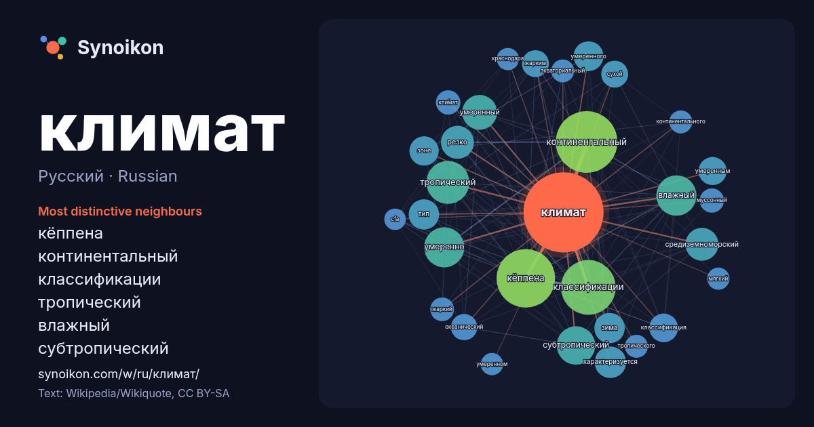

Русский · Russian · popular word
климат
“climate” · The words found around it in 1186 instances from Russian Wikipedia, Wikiquote.

Most distinctive neighbours
- кёппена 99×
- континентальный 77×
- классификации 73×
- тропический 55×
- влажный 46×
- субтропический 45×
- умеренный 36×
- средиземноморский 34×
- умеренно 31×
- умеренного 27×
- зима 26×
- резко 25×
- умеренным 25×
- океанический 22×
- жарким 21×
- классификация 21×
- тип 21×
- сухой 21×
- характеризуется 20×
- кли́мат 19×
× = how many times more often than in general Russian Wikipedia text.
Most frequent neighbours
- континентальный 115
- кёппена 104
- классификации 91
- тропический 56
- влажный 49
- умеренно 49
- субтропический 45
- умеренный 37
- резко 33
- средиземноморский 33
- летом 30
- характеризуется 30
- зима 28
- тип 28
- согласно 27
- умеренного 27
- зоне 26
- города 25
- классификация 25
- умеренным 24
In context
- климата — это мгновенное состояние некоторых характеристик (температура, влажность, атмосферное давление). Климат в узком смысле — локальный климат, Wikipedia snippets · Климат
- 2026) Климат Москвы — влажный умеренно континентальный, с сильным влиянием атлантического морского, с чётко выраженной сезонностью. На климат города Wikipedia snippets · Климат Москвы
- Ари́дный кли́мат (от лат. aridus «сухой») или климат пустынь (в классификации климатов Кёппена обозначается сочетанием латинских букв BWh, BWk и иногда Wikipedia snippets · Аридный климат
- существенное изменение климата, направленное с запада на восток (климатические области) и с севера на юг (зональные типы климата). В восточном направлении Wikipedia snippets · Климат России
- Уме́ренный кли́мат, или климат умеренных широ́т — климат, формирующийся в Северном полушарии между 40—45° и 62—68° с. ш. и в Южном между 42° и 58° ю. ш Wikipedia snippets · Умеренный климат
- Морско́й кли́мат, или океанический климат, — климат регионов, близких к морю, отличающийся небольшой суточной и годовой амплитудой температуры воздуха Wikipedia snippets · Морской климат
- период зачастую поступает тропический воздух. Согласно классификации климата Кёппена климат Краснодара соответствует зоне Cfa. Над данной территорией преобладают Wikipedia snippets · Климат Краснодара
- можно найти на странице обсуждения. (10 мая 2024) Континентальный климат — тип климата, характеризующийся стабильно жарким летом, стабильно морозной зимой Wikipedia snippets · Континентальный климат
More Russian words
- бог
- власть
- вода
- деньги
- жизнь
- здоровье
- золото
- искусство
- истина
- история
- кошка
- мост
- наука
- пища
- поезд
- природа
- работа
- семья
- сердце
- смерть
- собака
- язык
Precomputed on 2026-10-09 with default settings (±5 words, medium corpus). The interactive map can refresh it with live data.